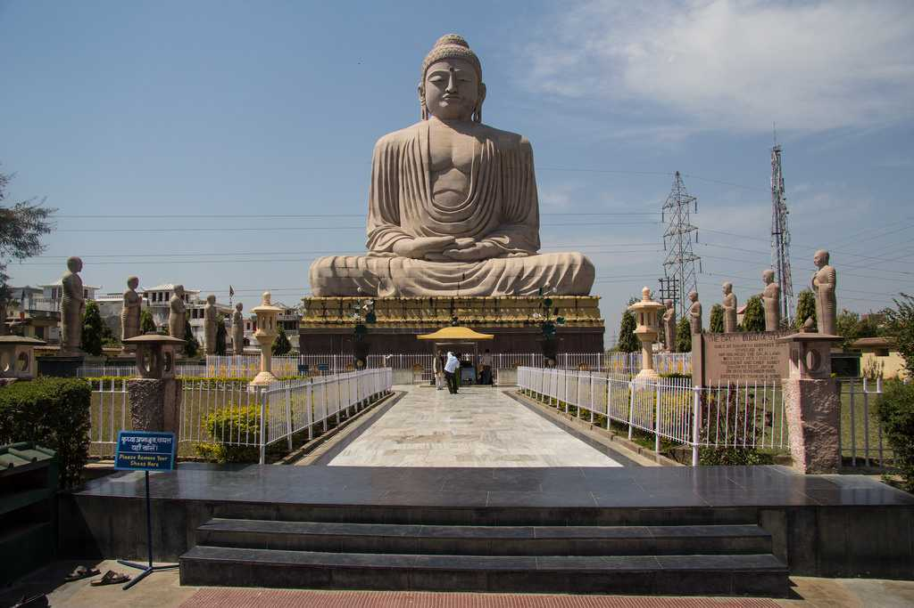

India Tourism
1.Bodhgaya

One of the most important pilgrimage sites for Buddhists, Bodhgaya is a village in the state of Bihar. It was here under the Bodhi tree that Gautama Buddha attained enlightenment. The place is bustling with pilgrims all through the year who come to pay their homage in the monasteries, shrines and temples. It also attracts tourists from India and abroad owing to its magnificent Buddha statue, the Mahabodhi Temple and the Bodhi tree
2.Vaishali
 Located in the interiors of Bihar, Vaishali is a small district which is also a revered Hindu, Buddhist and Jain worshipping site. It is the city where Lord Mahavir was born. Considered as the first republic of the world, Vaishali is believed to have been named after King Vishal, from the time of Mahabharat.It is also the city where Buddha delivered his last sermon. Surrounded by groves of mango and banana and extensive rice field, it is now a part of Trihut division of Bihar. The village is an important religious and historical attraction site and is flocked by tourists year in and year out.
Located in the interiors of Bihar, Vaishali is a small district which is also a revered Hindu, Buddhist and Jain worshipping site. It is the city where Lord Mahavir was born. Considered as the first republic of the world, Vaishali is believed to have been named after King Vishal, from the time of Mahabharat.It is also the city where Buddha delivered his last sermon. Surrounded by groves of mango and banana and extensive rice field, it is now a part of Trihut division of Bihar. The village is an important religious and historical attraction site and is flocked by tourists year in and year out.
3. Nalanda
 The most popular Mahavihara of the ancient times, a significant Buddhist seat of academic excellence and a modest pilgrim center, all wrapped in a wisp of spirituality, Nalanda continues to be an equally enriching location in the present. It offers vibrant substance of spirituality, history, culture, architecture, and tourism.
This city houses one of the world's oldest and finest residential universities which itself was an architectural masterpiece. Although in ruins, the entire complex presents a pretty picture and is flocked by tourists day in and day out. It has “viharas” or monasteries to the east and “chaiyas” or temples to the west. In addition to this, the complex houses a charming little museum, which has a collection of several of original Buddhist stupas, Hindu and Buddhist bronzes, coins, terracotta jars, a sample of burnt rice etc. The district is believed to be a cradle of religions. Apart from Buddhism, it is an important center for Jainism, Hinduism, and Sufism as well. Considering the rich heritage and the historical importance, it is a hot tourist destination
The most popular Mahavihara of the ancient times, a significant Buddhist seat of academic excellence and a modest pilgrim center, all wrapped in a wisp of spirituality, Nalanda continues to be an equally enriching location in the present. It offers vibrant substance of spirituality, history, culture, architecture, and tourism.
This city houses one of the world's oldest and finest residential universities which itself was an architectural masterpiece. Although in ruins, the entire complex presents a pretty picture and is flocked by tourists day in and day out. It has “viharas” or monasteries to the east and “chaiyas” or temples to the west. In addition to this, the complex houses a charming little museum, which has a collection of several of original Buddhist stupas, Hindu and Buddhist bronzes, coins, terracotta jars, a sample of burnt rice etc. The district is believed to be a cradle of religions. Apart from Buddhism, it is an important center for Jainism, Hinduism, and Sufism as well. Considering the rich heritage and the historical importance, it is a hot tourist destination
4.patna
 Prospering along the southern banks of river Ganges and set in the backdrop of a glorious historical past, Patna boasts of a dominating presence in history and enjoys the distinction of being one of the oldest cities in the world. In addition to being one of the major and most popular tourist destinations in India, this capital city of Bihar also holds significant religious and spiritual importance as it is a gateway to pilgrimage sites of Hindus, Sikhs, Jains and Buddhists.
click here for more
Prospering along the southern banks of river Ganges and set in the backdrop of a glorious historical past, Patna boasts of a dominating presence in history and enjoys the distinction of being one of the oldest cities in the world. In addition to being one of the major and most popular tourist destinations in India, this capital city of Bihar also holds significant religious and spiritual importance as it is a gateway to pilgrimage sites of Hindus, Sikhs, Jains and Buddhists.
click here for more